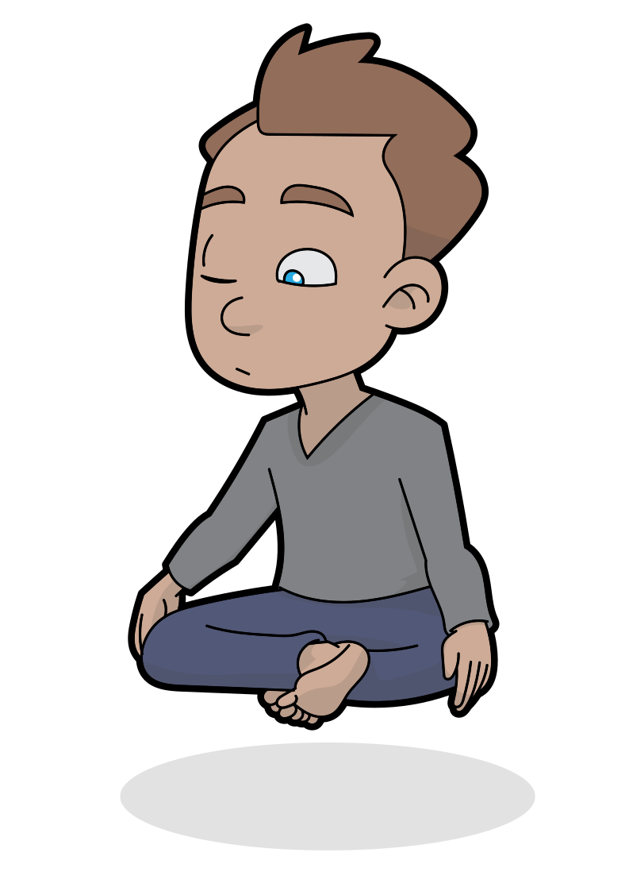

How to do it

This timer app can help you start training mindfulness meditation. It should work similar to the app described in this study.
If you want to do as in the study you should use this app one or more times each day, for a total of 10 minutes. The app will keep track of how much time you have meditated each day.
Each time you use the app you meditate for as long as the app tells you. After that you tell the app if you managed to keep your attention on the breath.
That is all. It is as simple as that.
Just keep your attention on the breath -
wherever you most easily can feel it in your body.
Be aware if, at any point, your attention has fully wandered away from the breath. Without any judgement,
gently bring it back to the next breath.
The study is still not freely available, but
you can probably get a copy of the study on
ResearchGate.
The
Supplementary Information from the study is free.
The instructions below by Jack Kornfield
are from this supplement.
Below are the instructions to the participants in the study:
For the next six weeks you will be using this app to practice mindfulness awareness of your breathing,
which is
a training in mindfulness attention.
During this training period, you will practice focusing your
attention on the
natural rhythms of the breath, using the breath as a way to develop attention and calm your
concentration.
This
is not a breath control practice, but a practice of awareness.
Now I’ll give you some suggestions for
how
to start
in your journey of learning to mindfully attend to your breath.
The first step is to settle into your body. Find a way to sit that is both comfortable, relaxed, yet
also
alert and
present. As you find a stable posture and feel settled, try to let go and relax into the position. Now,
pay attention
to your body; scan your body and let go of any obvious tensions that you can easily release. Let the
eyes
and
face be soft, loosen the jaw, let the shoulders relax and rest your arms and hand rest comfortably. Now
let your
belly be soft and your breath natural.
Now the next step is to notice your body breathing; feel how the body breathes on its own in a natural
rhythm,
sometimes fast or slow, sometimes deep or shallow. Now simply bring your attention to wherever you can
most
easily sense this breathing rhythm. It might be coolness in your nostrils, or the swirling tingling in
the
back of
the throat, or the brush of the air against your upper lip. It might be the rise and fall of chest or
belly. It might
even be your whole body breathing. If it's difficult to feel the rhythm of your breath, then take one
hand
and
place it on your belly and feel the rise and fall of your belly in the palm of your hand, and rest it
there as your
place of awareness.
Now that you’ve settled in you body and begun to sense your breath, notice it's natural rhythms and
variations.
Some breaths might be shorter or longer than others. Let your body breathe as it wishes. As you feel
each
breath
with your attention, try to invite a calm and steadiness of body and mind so that each breath, breathing
in and
breathing out, brings a sense of calm and peace. Let other experiences that arise, such as sounds,
thoughts,
feelings, and body sensations come and go, rise and fall like waves of the ocean around the breath. Keep
your
attention resting on the natural rhythm of the breath.
Be aware if, at any point, your attention has
fully
wandered away from the breath. Without any judgement, gently bring it back to the next breath.
It is
like
training a puppy; bring it back gently, sit, and stay. By gradually returning again and again to the
breath, you will
learn to be aware of the breath and to focus your attention gradually, more deeply. Like with any
training--like
learning piano or practicing basketball, you are learning the art of steadying your attention. Steadying
and
focusing your attention is a skill that will serve you in every area of your life.
To further help your focus on attention on the breath, for this next period, along with noticing the
breath as you
have, include awareness if there are spaces between the breath. In these gaps, keep your attention in
the
same
area of your body until the next breath begins. This helps the attention become more continuous and
steady.
To again further help your focus of attention on the breath, for this next period, along with noticing
the
breath,
include awareness of any moments of calm and well-being that arise as your sense the breath. Continue
your
awareness of the breath, and at the same time, feel how the calm steady wellbeing can increase along
with
your
growing attention.
Meditate? How?
Tell me more 🕉️
️Jack Kornfield´s instructions
Initial Meditation Instructions
Meditation Instructions 2 (Given prior to starting the third week of training)
Meditation Instructions 3 (Given prior to starting the fifth week of training)
About us
It is just me. Who happen to know a bit about psychology, meditation and IT.
I wrote this small app when I read about the study I mention. It looks like a good idea making a tool like this widely and free available.
I have no affiliation whatsoever with the study authors.
Privacy
We store info about your current meditation session length. And we store info about your daily success.
This is only stored on your computer/mobile.